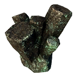
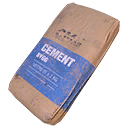
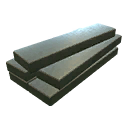
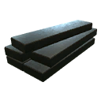
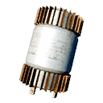
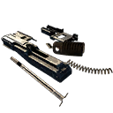

All materials25 materials
The overview. Schematics counts the schematics whose recipe asks for the material, and Total for one of each adds up what crafting every one of those schematics once would take (the apparel ranks count once each). Placed is how many pickups of it lie at fixed spots in the world files; most materials come from crates, bodies and destroyed machines instead, which are random. Click a name for the full list of schematics.
| Material | Group | Stack | Schematics | Total for one of each | Placed | Internal name | |
|---|---|---|---|---|---|---|---|
 | Aluminum | Raw materials | 20 | 15 | 127 | 3 | aluminium |
 | Copper | Raw materials | 20 | 13 | 107 | 11 | copper |
 | Gold | Raw materials | 20 | – | – | – | gold |
 | Lead | Raw materials | 20 | 28 | 308 | 1 | lead |
 | Phosphorus | Raw materials | 20 | 11 | 1,883 | – | phosphorus |
 | Titanium | Raw materials | 20 | 6 | 130 | 1 | titanium |
 | Tungsten | Raw materials | 20 | – | – | 5 | tungsten |
| Uranium | Raw materials | 20 | 1 | 1 | – | uranium |
 | Wood | Raw materials | 20 | 21 | 356 | 111 | wood |
 | Accelerant | Fabricated | 20 | 7 | 149 | 3 | accelerant |
 | Adhesive | Fabricated | 25 | 53 | 817 | 31 | adhesive |
 | Cement | Fabricated | 20 | – | – | – | concrete |
 | Electrolyte | Fabricated | 20 | 8 | 29 | 7 | electrolyte |
 | Ethanol | Fabricated | 20 | 20 | 936 | – | ethanol |
 | Explosive | Fabricated | 20 | 56 | 536 | – | explosive |
 | Plastic | Fabricated | 20 | 23 | 548 | 25 | plastic |
 | Rubber | Fabricated | 20 | 16 | 509 | 53 | rubber |
 | Textile | Fabricated | 20 | 22 | 481 | 48 | cloth |
 | Thread | Fabricated | 20 | 77 | 1,446 | 29 | thread |
 | Refined Aluminum Alloy | Alloys | 20 | 16 | 81 | – | refined_aluminium_alloy |
 | Refined Tungsten Alloy | Alloys | 20 | 20 | 39 | – | refined_tungsten_alloy |
| Refined Uranium Alloy | Alloys | 20 | 16 | 20 | – | refined_uranium_alloy | |
 | Steel | Alloys | 20 | 47 | 1,179 | 119 | steel |
 | Ultracapacitors | Components | 20 | – | – | – | capacitors |
 | Weapon Parts | Components | 20 | – | – | – | weapon_parts |
Tips from the numbers
- By total amount the most wanted materials are Phosphorus (1,883 in 11 schematics), Thread (1,446 in 77 schematics), Steel (1,179 in 47 schematics), Ethanol (936 in 20 schematics). Keep a good stock of them.
- Thread is in the most recipes (77), 75 of them apparel upgrades.
- No schematic in the current game files asks for Gold, Tungsten, Cement, Ultracapacitors, Weapon Parts.
- Refined Aluminum Alloy is only asked for by apparel rank 4 (5 schematics), apparel rank 5 (5 schematics), experimental (6 schematics).
- Refined Tungsten Alloy is only asked for by apparel rank 4 (4 schematics), apparel rank 5 (4 schematics), experimental (8 schematics), companion (4 schematics).
- Refined Uranium Alloy is only asked for by apparel rank 4 (4 schematics), apparel rank 5 (4 schematics), experimental (8 schematics).
Raw materials9 materials
Basic metals, wood and phosphorus, picked up in the world or salvaged from machines.
Aluminum
aluminiumHash 1829315609Used by 15 schematics, 127 for one of eachPlaced 3: North Coast 2 · Farmlands 1Schematics that use Aluminum (15)
 Apparel 6 · 48 total
Apparel 6 · 48 total
 Ammo 1 · 2 total
Ammo 1 · 2 total
- Smoke Round × 2
 Experimental 1 · 8 total
Experimental 1 · 8 total
- HCDP Round × 8
 Companion 4 · 53 total
Companion 4 · 53 total
 DLC 3 · 16 total
DLC 3 · 16 total
Copper
copperHash 3872751448Used by 13 schematics, 107 for one of eachPlaced 11: Forest 5 · Archipelago 2 · Mountains 1 · Marshlands 1 · Farmlands 1 · North Coast 1Schematics that use Copper (13)
Gold
goldHash 3318379628Used by no schematicPlaced none at fixed spotsLead
leadHash 2274639921Used by 28 schematics, 308 for one of eachPlaced 1: Marshlands 1Schematics that use Lead (28)
Apparel 1 · 6 total
Ammo 11 · 22 total
 Equipment 1 · 2 total
Equipment 1 · 2 total
- Gasoline × 2
Experimental 9 · 72 total
Companion 4 · 202 total
DLC 2 · 4 total
Phosphorus
phosphorusHash 3614741105Used by 11 schematics, 1,883 for one of eachPlaced none at fixed spotsSchematics that use Phosphorus (11)
Apparel 8 · 1,800 total
Equipment 3 · 83 total
- Grenade × 6
- Emergency Flare (Sticky) × 2
- Adrenaline Shot × 75
Titanium
titaniumHash 1109172895Used by 6 schematics, 130 for one of eachPlaced 1: South Coast 1Schematics that use Titanium (6)
Tungsten
tungstenHash 337809462Used by no schematicPlaced 5: Forest 3 · Marshlands 2Uranium
uraniumHash 2448539180Used by 1 schematics, 1 for one of eachPlaced none at fixed spotsSchematics that use Uranium (1)
Experimental 1 · 1 total
Wood
woodHash 1860449287Used by 21 schematics, 356 for one of eachPlaced 111: Forest 67 · Mountains 11 · Farmlands 8 · South Coast 7 · Marshlands 7 · Archipelago 7 · North Coast 4Schematics that use Wood (21)
Apparel 12 · 192 total
- Bullet-Resistant Pants (rank 1) × 16
- Camouflage Pants (rank 1) × 16
- Blast-Resistant Pants (rank 1) × 16
- Bullet-Resistant Shirt (rank 1) × 16
- Camouflage Shirt (rank 1) × 16
- Blast-Resistant Shirt (rank 1) × 16
- Bullet-Resistant Jacket (rank 1) × 16
- Camouflage Jacket (rank 1) × 16
- Blast-Resistant Jacket (rank 1) × 16
- Bullet-Resistant Shoes (rank 1) × 16
- Camouflage Shoes (rank 1) × 16
- Blast-Resistant Shoes (rank 1) × 16
Equipment 2 · 7 total
- Emergency flare × 4
- Firework × 3
Companion 4 · 137 total
DLC 3 · 20 total
Fabricated10 materials
Processed materials such as adhesive, textile and explosive.
Accelerant
accelerantHash 4164821587Used by 7 schematics, 149 for one of eachPlaced 3: Farmlands 2 · North Coast 1Schematics that use Accelerant (7)
Adhesive
adhesiveHash 1177317592Used by 53 schematics, 817 for one of eachPlaced 31: Forest 12 · Marshlands 9 · Farmlands 3 · Mountains 2 · South Coast 2 · North Coast 2 · Archipelago 1Schematics that use Adhesive (53)
Apparel 40 · 768 total
- Bullet-Resistant Pants (rank 1) × 8
- Bullet-Resistant Pants (rank 2) × 12
- Bullet-Resistant Pants (rank 3) × 16
- Bullet-Resistant Pants (rank 4) × 24
- Bullet-Resistant Pants (rank 5) × 36
- Camouflage Pants (rank 1) × 8
- Camouflage Pants (rank 2) × 12
- Camouflage Pants (rank 3) × 16
- Camouflage Pants (rank 4) × 24
- Camouflage Pants (rank 5) × 36
- Bullet-Resistant Shirt (rank 1) × 8
- Bullet-Resistant Shirt (rank 2) × 12
- Bullet-Resistant Shirt (rank 3) × 16
- Bullet-Resistant Shirt (rank 4) × 24
- Bullet-Resistant Shirt (rank 5) × 36
- Camouflage Shirt (rank 1) × 8
- Camouflage Shirt (rank 2) × 12
- Camouflage Shirt (rank 3) × 16
- Camouflage Shirt (rank 4) × 24
- Camouflage Shirt (rank 5) × 36
- Bullet-Resistant Jacket (rank 1) × 8
- Bullet-Resistant Jacket (rank 2) × 12
- Bullet-Resistant Jacket (rank 3) × 16
- Bullet-Resistant Jacket (rank 4) × 24
- Bullet-Resistant Jacket (rank 5) × 36
- Camouflage Jacket (rank 1) × 8
- Camouflage Jacket (rank 2) × 12
- Camouflage Jacket (rank 3) × 16
- Camouflage Jacket (rank 4) × 24
- Camouflage Jacket (rank 5) × 36
- Bullet-Resistant Shoes (rank 1) × 8
- Bullet-Resistant Shoes (rank 2) × 12
- Bullet-Resistant Shoes (rank 3) × 16
- Bullet-Resistant Shoes (rank 4) × 24
- Bullet-Resistant Shoes (rank 5) × 36
- Camouflage Shoes (rank 1) × 8
- Camouflage Shoes (rank 2) × 12
- Camouflage Shoes (rank 3) × 16
- Camouflage Shoes (rank 4) × 24
- Camouflage Shoes (rank 5) × 36
Equipment 9 · 29 total
Experimental 2 · 10 total
DLC 2 · 10 total
- Portable Cover × 8
- Toy Car Lure × 2
Cement
concreteHash 1685088323Used by no schematicPlaced none at fixed spotsElectrolyte
electrolyteHash 3891833739Used by 8 schematics, 29 for one of eachPlaced 7: Mountains 2 · Marshlands 2 · South Coast 1 · Archipelago 1 · Forest 1Schematics that use Electrolyte (8)
Ammo 1 · 4 total
Equipment 4 · 12 total
- Poison Gas Tank × 4
- Radio × 2
- Car Battery EMP × 2
- Boombox × 4
DLC 3 · 13 total
Ethanol
ethanolHash 1802529588Used by 20 schematics, 936 for one of eachPlaced none at fixed spotsSchematics that use Ethanol (20)
Apparel 12 · 720 total
- Camouflage Pants (rank 4) × 40
- Camouflage Pants (rank 5) × 80
- Athletic Pants (rank 4) × 40
- Athletic Pants (rank 5) × 80
- Camouflage Shirt (rank 4) × 40
- Camouflage Shirt (rank 5) × 80
- Camouflage Jacket (rank 4) × 40
- Camouflage Jacket (rank 5) × 80
- Camouflage Shoes (rank 4) × 40
- Camouflage Shoes (rank 5) × 80
- Athletic Shoes (rank 4) × 40
- Athletic Shoes (rank 5) × 80
Equipment 3 · 70 total
Experimental 1 · 30 total
Companion 4 · 116 total
Explosive
explosiveHash 1487466185Used by 56 schematics, 536 for one of eachPlaced none at fixed spotsSchematics that use Explosive (56)
Ammo 23 · 92 total
- .32 ACP Hollow-Point Ammo × 4
- 9mm FMJ Ammo (SMG) × 4
- 5.56mm Full Metal Jacket Ammo × 4
- 9mm AP Ammo (SMG) × 4
- 7.62mm Full Metal Jacket Ammo × 4
- 5.56mm Armor-Piercing Ammo × 4
- 7.62mm Armor-Piercing Ammo × 4
- 9mm FMJ Ammo (Handgun) × 4
- .32 ACP Full Metal Jacket Ammo × 4
- .44 Hollow-Point Ammo × 4
- 9mm AP Ammo (Handgun) × 4
- .44 Full Metal Jacket Ammo × 4
- 12ga Birdshot Ammo × 4
- 12ga Buckshot Ammo × 4
- High-Explosive Dual-Purpose Round × 4
- 12ga Slug Ammo × 4
- Smoke Round × 4
- .243 Soft-Point Ammo × 4
- .270 Soft-Point Ammo × 4
- .243 Full Metal Jacket Ammo × 4
- .50 BMG Full Metal Jacket Ammo. × 4
- .270 Full Metal Jacket Ammo × 4
- .50 BMG Armor-Piercing Ammo × 4
Equipment 1 · 2 total
- Grenade × 2
Experimental 22 · 352 total
- 12ga Slug Corrosive Ammo × 16
- HRDP Round × 16
- 12ga Slug Medical Ammo × 16
- HCDP Round × 16
- 9mm SMG Corrosive Ammo × 16
- 5.56mm Corrosive Ammo × 16
- 7.62mm Tar Ammo × 16
- 9mm SMG Explosive Ammo × 16
- 5.56mm HEAT Ammo × 16
- 7.62mm Shock Ammo × 16
- .32 ACP Medical Ammo × 16
- 9mm Handgun Shock Ammo × 16
- .44 Explosive Ammo × 16
- .32 ACP Radioactive Ammo × 16
- 9mm Handgun HEAT Ammo × 16
- .44 Tar Ammo × 16
- .243 HEAT Ammo × 16
- .270 Shock Ammo × 16
- .50 BMG Explosive Ammo × 16
- .243 Explosive Ammo × 16
- .270 Medical Ammo × 16
- .50 BMG Medical Ammo × 16
DLC 10 · 90 total
Plastic
plasticHash 3912833085Used by 23 schematics, 548 for one of eachPlaced 25: Forest 16 · Marshlands 5 · North Coast 2 · South Coast 1 · Farmlands 1Schematics that use Plastic (23)
Apparel 17 · 432 total
- Bullet-Resistant Pants (rank 2) × 24
- Stealthy Pants (rank 2) × 24
- Fireproofed Pants (rank 2) × 24
- Camouflage Pants (rank 3) × 32
- Bullet-Resistant Shirt (rank 2) × 24
- Stealthy Shirt (rank 2) × 24
- Fireproofed Shirt (rank 2) × 24
- Camouflage Shirt (rank 3) × 32
- Bullet-Resistant Jacket (rank 2) × 24
- Stealthy Jacket (rank 2) × 24
- Fireproofed Jacket (rank 2) × 24
- Camouflage Jacket (rank 3) × 32
- Bullet-Resistant Shoes (rank 2) × 24
- Stealthy Shoes (rank 2) × 24
- Fireproofed Shoes (rank 2) × 24
- Camouflage Shoes (rank 3) × 32
- Padded Shoes (rank 1) × 16
Companion 4 · 106 total
DLC 2 · 10 total
- Toy Car Lure × 2
- Flamethrower Napalm × 8
Rubber
rubberHash 3911189399Used by 16 schematics, 509 for one of eachPlaced 53: Forest 33 · Marshlands 8 · North Coast 5 · South Coast 4 · Farmlands 3Schematics that use Rubber (16)
Apparel 10 · 304 total
- Stealthy Pants (rank 3) × 32
- Blast-Resistant Pants (rank 3) × 32
- Athletic Pants (rank 2) × 24
- Stealthy Shirt (rank 3) × 32
- Blast-Resistant Shirt (rank 3) × 32
- Stealthy Jacket (rank 3) × 32
- Blast-Resistant Jacket (rank 3) × 32
- Stealthy Shoes (rank 3) × 32
- Blast-Resistant Shoes (rank 3) × 32
- Athletic Shoes (rank 2) × 24
Equipment 1 · 4 total
- Car Battery EMP × 4
Companion 4 · 191 total
DLC 1 · 10 total
- Hacking Dart × 10
Textile
clothHash 4189902513Used by 22 schematics, 481 for one of eachPlaced 48: Forest 35 · Farmlands 5 · Marshlands 4 · North Coast 3 · Archipelago 1Schematics that use Textile (22)
Apparel 12 · 224 total
- Stealthy Pants (rank 1) × 16
- Fireproofed Pants (rank 1) × 16
- Camouflage Pants (rank 2) × 24
- Stealthy Shirt (rank 1) × 16
- Fireproofed Shirt (rank 1) × 16
- Camouflage Shirt (rank 2) × 24
- Stealthy Jacket (rank 1) × 16
- Fireproofed Jacket (rank 1) × 16
- Camouflage Jacket (rank 2) × 24
- Stealthy Shoes (rank 1) × 16
- Fireproofed Shoes (rank 1) × 16
- Camouflage Shoes (rank 2) × 24
Equipment 4 · 34 total
Experimental 2 · 18 total
Companion 4 · 205 total
Thread
threadHash 1065120515Used by 77 schematics, 1,446 for one of eachPlaced 29: Forest 19 · Marshlands 4 · Farmlands 3 · North Coast 2 · South Coast 1Schematics that use Thread (77)
Apparel 75 · 1,440 total
- Stealthy Pants (rank 1) × 8
- Stealthy Pants (rank 2) × 12
- Stealthy Pants (rank 3) × 16
- Stealthy Pants (rank 4) × 24
- Stealthy Pants (rank 5) × 36
- Fireproofed Pants (rank 1) × 8
- Fireproofed Pants (rank 2) × 12
- Fireproofed Pants (rank 3) × 16
- Fireproofed Pants (rank 4) × 24
- Fireproofed Pants (rank 5) × 36
- Blast-Resistant Pants (rank 1) × 8
- Blast-Resistant Pants (rank 2) × 12
- Blast-Resistant Pants (rank 3) × 16
- Blast-Resistant Pants (rank 4) × 24
- Blast-Resistant Pants (rank 5) × 36
- Athletic Pants (rank 1) × 8
- Athletic Pants (rank 2) × 12
- Athletic Pants (rank 3) × 16
- Athletic Pants (rank 4) × 24
- Athletic Pants (rank 5) × 36
- Stealthy Shirt (rank 1) × 8
- Stealthy Shirt (rank 2) × 12
- Stealthy Shirt (rank 3) × 16
- Stealthy Shirt (rank 4) × 24
- Stealthy Shirt (rank 5) × 36
- Fireproofed Shirt (rank 1) × 8
- Fireproofed Shirt (rank 2) × 12
- Fireproofed Shirt (rank 3) × 16
- Fireproofed Shirt (rank 4) × 24
- Fireproofed Shirt (rank 5) × 36
- Blast-Resistant Shirt (rank 1) × 8
- Blast-Resistant Shirt (rank 2) × 12
- Blast-Resistant Shirt (rank 3) × 16
- Blast-Resistant Shirt (rank 4) × 24
- Blast-Resistant Shirt (rank 5) × 36
- Stealthy Jacket (rank 1) × 8
- Stealthy Jacket (rank 2) × 12
- Stealthy Jacket (rank 3) × 16
- Stealthy Jacket (rank 4) × 24
- Stealthy Jacket (rank 5) × 36
- Fireproofed Jacket (rank 1) × 8
- Fireproofed Jacket (rank 2) × 12
- Fireproofed Jacket (rank 3) × 16
- Fireproofed Jacket (rank 4) × 24
- Fireproofed Jacket (rank 5) × 36
- Blast-Resistant Jacket (rank 1) × 8
- Blast-Resistant Jacket (rank 2) × 12
- Blast-Resistant Jacket (rank 3) × 16
- Blast-Resistant Jacket (rank 4) × 24
- Blast-Resistant Jacket (rank 5) × 36
- Stealthy Shoes (rank 1) × 8
- Stealthy Shoes (rank 2) × 12
- Stealthy Shoes (rank 3) × 16
- Stealthy Shoes (rank 4) × 24
- Stealthy Shoes (rank 5) × 36
- Fireproofed Shoes (rank 1) × 8
- Fireproofed Shoes (rank 2) × 12
- Fireproofed Shoes (rank 3) × 16
- Fireproofed Shoes (rank 4) × 24
- Fireproofed Shoes (rank 5) × 36
- Blast-Resistant Shoes (rank 1) × 8
- Blast-Resistant Shoes (rank 2) × 12
- Blast-Resistant Shoes (rank 3) × 16
- Blast-Resistant Shoes (rank 4) × 24
- Blast-Resistant Shoes (rank 5) × 36
- Athletic Shoes (rank 1) × 8
- Athletic Shoes (rank 2) × 12
- Athletic Shoes (rank 3) × 16
- Athletic Shoes (rank 4) × 24
- Athletic Shoes (rank 5) × 36
- Padded Shoes (rank 1) × 8
- Padded Shoes (rank 2) × 12
- Padded Shoes (rank 3) × 16
- Padded Shoes (rank 4) × 24
- Padded Shoes (rank 5) × 36
Equipment 1 · 2 total
- Lockpick Hairpin × 2
DLC 1 · 4 total
Alloys4 materials
Steel and the three refined alloys. The refined alloys are what the higher ranks of the apparel tree, the experimental ammo and some companion armor ask for.
Refined Aluminum Alloy
refined_aluminium_alloyHash 3880045629Used by 16 schematics, 81 for one of eachPlaced none at fixed spotsSchematics that use Refined Aluminum Alloy (16)
Apparel 10 · 75 total
Experimental 6 · 6 total
Refined Tungsten Alloy
refined_tungsten_alloyHash 2448182319Used by 20 schematics, 39 for one of eachPlaced none at fixed spotsSchematics that use Refined Tungsten Alloy (20)
Apparel 8 · 24 total
Experimental 8 · 8 total
Refined Uranium Alloy
refined_uranium_alloyHash 2611176358Used by 16 schematics, 20 for one of eachPlaced none at fixed spotsSchematics that use Refined Uranium Alloy (16)
Apparel 8 · 12 total
Experimental 8 · 8 total
Steel
steelHash 645449321Used by 47 schematics, 1,179 for one of eachPlaced 119: Forest 58 · Marshlands 36 · Farmlands 8 · North Coast 8 · Mountains 4 · Archipelago 4 · South Coast 1Schematics that use Steel (47)
Apparel 11 · 288 total
- Bullet-Resistant Pants (rank 3) × 32
- Blast-Resistant Pants (rank 2) × 24
- Athletic Pants (rank 1) × 16
- Bullet-Resistant Shirt (rank 3) × 32
- Blast-Resistant Shirt (rank 2) × 24
- Bullet-Resistant Jacket (rank 3) × 32
- Blast-Resistant Jacket (rank 2) × 24
- Bullet-Resistant Shoes (rank 3) × 32
- Blast-Resistant Shoes (rank 2) × 24
- Athletic Shoes (rank 1) × 16
- Padded Shoes (rank 3) × 32
Ammo 11 · 88 total
- 9mm AP Ammo (SMG) × 8
- 5.56mm Armor-Piercing Ammo × 8
- 7.62mm Armor-Piercing Ammo × 8
- .32 ACP Full Metal Jacket Ammo × 8
- 9mm AP Ammo (Handgun) × 8
- .44 Full Metal Jacket Ammo × 8
- High-Explosive Dual-Purpose Round × 8
- 12ga Slug Ammo × 8
- .243 Full Metal Jacket Ammo × 8
- .270 Full Metal Jacket Ammo × 8
- .50 BMG Armor-Piercing Ammo × 8
Equipment 4 · 20 total
- Compressed Air Tank × 4
- Poison Gas Tank × 8
- Lockpick Hairpin × 4
- Repair Kit × 4
Experimental 11 · 352 total
- 12ga Slug Corrosive Ammo × 32
- 12ga Slug Medical Ammo × 32
- 9mm SMG Corrosive Ammo × 32
- 5.56mm Corrosive Ammo × 32
- 7.62mm Tar Ammo × 32
- .32 ACP Medical Ammo × 32
- 9mm Handgun Shock Ammo × 32
- .44 Explosive Ammo × 32
- .243 HEAT Ammo × 32
- .270 Shock Ammo × 32
- .50 BMG Explosive Ammo × 32
Companion 4 · 344 total
DLC 6 · 87 total
Components2 materials
Ultracapacitors and weapon parts.
Ultracapacitors
capacitorsHash 3591195965Used by no schematicPlaced none at fixed spotsWeapon Parts
weapon_partsHash 2700507435Used by no schematicPlaced none at fixed spotsPlaced materials by region
Material pickups at fixed spots in the world files, per region. Only 14 of the 25 materials are placed by hand at all, and in small numbers: the bulk of your materials comes from random loot in crates, on bodies and from destroyed machines. The interactive map shows every one of these spots with Additional Locations on.
| Material | Archipelago | South Coast | Farmlands | Forest | Mountains | Marshlands | North Coast | Total |
|---|---|---|---|---|---|---|---|---|
| Steel | 4 | 1 | 8 | 58 | 4 | 36 | 8 | 119 |
| Wood | 7 | 7 | 8 | 67 | 11 | 7 | 4 | 111 |
| Rubber | – | 4 | 3 | 33 | – | 8 | 5 | 53 |
| Textile | 1 | – | 5 | 35 | – | 4 | 3 | 48 |
| Adhesive | 1 | 2 | 3 | 12 | 2 | 9 | 2 | 31 |
| Thread | – | 1 | 3 | 19 | – | 4 | 2 | 29 |
| Plastic | – | 1 | 1 | 16 | – | 5 | 2 | 25 |
| Copper | 2 | – | 1 | 5 | 1 | 1 | 1 | 11 |
| Electrolyte | 1 | 1 | – | 1 | 2 | 2 | – | 7 |
| Tungsten | – | – | – | 3 | – | 2 | – | 5 |
| Aluminum | – | – | 1 | – | – | – | 2 | 3 |
| Accelerant | – | – | 2 | – | – | – | 1 | 3 |
| Lead | – | – | – | – | – | 1 | – | 1 |
| Titanium | – | 1 | – | – | – | – | – | 1 |
slag, stack 20) looks like a material but the game files list it under Other items, and no schematic uses it.